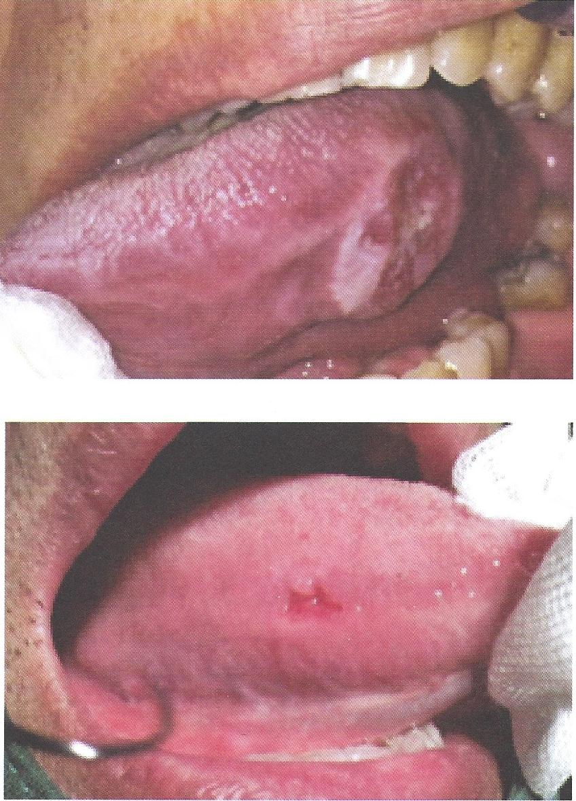

เป็นแผลเรื้อรังไม่หาย เป็นก้อน คลำแข็ง
มักเป็นข้างเดียวและเป็นที่เดิม
ไม่มีการเป็นแล้วหาย หรือย้ายที่ไปเรื่อยๆ
พบบ่อยที่ลิ้น กระพุ้งแก้ม เหงือก
มักมีฝ้าขาวที่เช็ดไม่ออกหรือรอยแดงนำมาก่อน
มักมีอาการปวดหรือชาร่วมด้วย ต่อมน้ำเหลืองอาจโตร่วมด้วย
อาจมีการใช้ยาสเตียรอยด์มาก่อนและไม่ดีขึ้น
ปัจจัยเสี่ยง คือการสูบบุหรี่ ดื่มเหล้าและเคี้ยวหมาก
หากกำจัดปัจจัยเสี่ยงที่ทำให้เกิดการระคายเคืองแล้ว 2-3 สัปดาห์ แล้วไม่ดีขึ้น
ควรส่งต่อทันตแพทย์เพื่อวินิจฉัย